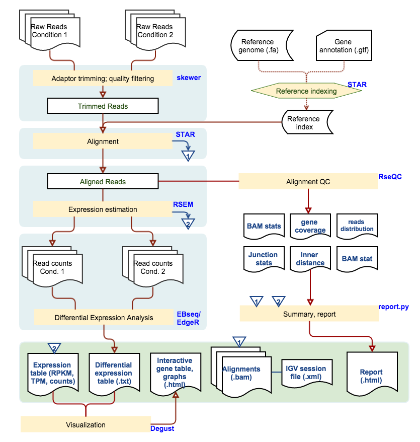

| PI Name | {{PIname}} |
|---|---|
| Project Description | {{description}} |
| Sample | {{sample_num}} |
| Organism | {{organism}} |
| Reference Database | {{ref}} |
| Report Generation Date | {{report_time}} |
Sequencing reads were trimmed to remove sequencing adaptors and low quality bases. And subsequently aligned to the annotated reference genome using aligner STAR [1]. Quantification of expression for each gene is calculated by RSEM[2], which produce both Transcripts Per Million reads (TPM), and expected read count. The expected read counts are used for differential gene expression analysis using EBSeq [3]
